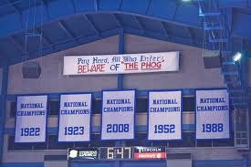

Martin Manley: My Life and Death
Born 8-15-53, Died 8-15-13 , Age 60
- Home Page
- January 1, 2012
- June 11, 2012
- Suicide Preface
- Why Suicide?
- Why not?
- Why Age 60?
- Self-Serving?
- Suicide - How 2
- Gun Control
- Other Suicides
- Other Quotes
- ------------------------------------
- Growing Up
- OMG: I look 60!
- Mom and Dad
- The Heavens
- My Religion
- Chancel Choir
- Victory O Lord
- The Proposal
- Two Marriages
- First Two Loves
- Pictures
- Trips and Travel
- Writing Fiction
- Music & Poetry
- Movies & TV
- Health
- Sleep Deprived
- Living Donor
- Food & Drink
- Creations
- Sports
- KC Star
- KC Tornado
- My IQ
- Synesthesia
- Poker
- Legal
- JOCO, Ks.
- U.S. Financial
- 911 & Conspiracies
- COOL STUFF
- Births & Deaths
Kansas Basketball
I’ve written hundreds of articles on the University of Kansas basketball program. I have been a KU fan since I was a kid – although that never made me anti-Kansas State or anti-Mizzou. I’ve always rooted for both whenever they were playing anyone but Kansas. Still, of all the teams of all the sports, college and pro in the world, KU basketball is my favorite. I know just about everything there is to know about it going back to the beginning of the program.
One thing that has driven my interest over the years was Kansas’ race against Kentucky and North Carolina for most victories in school history.
Kansas was among a group of six schools that alternated the lead for most total victories up until Kentucky took over for good in 1968. The other five schools that led at one time or the other were Temple, Yale, Fordham, Penn and Oregon State.
UK held the lead from 1968 through 1989. North Carolina took the lead for six years from 1990-1995 (light blue). Kentucky has held it since. Shown is how far Kansas was behind at the end of each season.
Year |
| Year |
| Year |
| Year |
| Year |
|
1968 | -4 | 1977 | -45 | 1986 | -79 | 1996 | -54 | 2005 | -56 |
1969 | -7 | 1978 | -51 | 1987 | -72 | 1997 | -55 | 2006 | -53 |
1970 | -16 | 1979 | -52 | 1988 | -70 | 1998 | -55 | 2007 | -42 |
1971 | -11 | 1980 | -66 | 1989 | -64 | 1999 | -60 | 2008 | -23 |
1972 | -21 | 1981 | -64 | 1990 | -52 | 2000 | -59 | 2009 | -18 |
1973 | -33 | 1982 | -73 | 1991 | -54 | 2001 | -57 | 2010 | -20 |
1974 | -25 | 1983 | -83 | 1992 | -50 | 2002 | -46 | 2011 | -14 |
1975 | -30 | 1984 | -90 | 1993 | -55 | 2003 | -48 | 2012 | -20 |
1976 | -37 | 1985 | -82 | 1994 | -56 | 2004 | -51 | 2013 | -10 |
|
|
|
| 1995 | -59 |
|
|
|
|
As of August 15, 2013, the total wins are Kentucky 2,111, Kansas 2,101 and North Carolina 2,090. Considering Kansas trailed Kentucky by 90 wins in 1984 – Larry Brown’s first year, it’s amazing to be only ten behind.
I talked about bucket list things in the “Why Not?” category to the left. And, although I don’t have such a thing, if I did… the #1 thing on the list might be to live long enough to see Kansas overtake Kentucky in total wins.
Someday when that happens… will you PLEASE remember me? If it's possible for me to be smiling, I will be!
Obviously, what makes Kansas basketball special is all the wins by so few coaches – an exclusive list which includes the inventor of the game of basketball – James Naismith. Even great coaches of other schools came from Kansas – Dean Smith (1,137 wins – 54% of all victories at North Carolina) and Adoph Rupp (1,066 wins – 51% of all victories at Kentucky)!
Of course, Kansas has had a lot of great players over the years including Clyde Lovellette, Wilt Chamberlain, Jo Jo White, Danny Manning, Paul Pierce, etc. Here are a couple articles on all KU players in the NBA (Intro) and (Table).
Between coaches and players and anyone else affiliated with basketball, Kansas has the most inductees into the Basketball Hall of Fame.
As I type this, Kansas has won nine consecutive conference championships – an unheard of stat for a major conference. In fact, KU’s streak of conference titles among the six major conferences since UCLA in 1979 (13 straight) is over twice that of any other team!
Year | Team | Conference | Avg.#.Teams | Streak |
2005-2013 | Kansas | Big 12 | 11.6 | 9 |
1997-2000 | Mich. State | Big Ten | 11.0 | 4 |
1988-1991 | Arizona | PAC 8 | 10.0 | 4 |
1995-1998 | Kansas | Big 8/Big 12 | 10.0 | 4 |
1997-2000 | Duke | ACC | 9.0 | 4 |
1980-1983 | Missouri | Big 8 | 8.0 | 4 |
1982-1985 | N. Carolina | ACC | 8.0 | 4 |
I did a lot of research on which players “won” the most games for Kansas. I totally disagreed with the methodology used by the University. It’s ludicrous. Thus the correct complete list is shown in this post, but I’ll show you the top-10 here. It will be at least two years before anyone else is added (Naadir Tharpe?). Beyond that, who knows?
Rk | Player | Wins |
| Rk | Player | Wins |
1 | Tyshawn Taylor | 125 |
| 6 | Tyrel Reed | 117 |
2 | Sherron Collins | 124 |
| 7 | Travis Releford | 116 |
3 | Ryan Robertson | 121 |
| 8 | Raef LaFrentz | 116 |
4 | Billy Thomas | 120 |
| 9 | B.J. Williams | 115 |
5 | Elijah Johnson | 119 |
| 10 | Nick Bradford | 115 |
COOL FACTOID: Kansas’ 12 consecutive non swept (by a conference opponent) seasons is the longest such streak by any team in a major conference since UCLA went 14 consecutive years without being swept by a conference opponent.
COOL FACTOID: Kansas has won 30 consecutive Senior Day games since Ted Owens. KU was just 13-6 during Owens' years.
KU has never had an undefeated season, but has lost only once on six occasions.
Team | Year | Record | Lost to | Score |
Kansas | 1934 | 16-1 | at Nebraska | 21-24 |
Kansas | 1925 | 17-1 | vs. K-State | 28-40 |
Kansas | 1923 | 17-1 | at.KC.Athletic.Club | 23-27 |
Kansas | 1915 | 16-1 | vs. K-State | 18-21 |
Kansas | 1914 | 17-1 | at K-State | 25-29 |
Kansas | 1910 | 18-1 | at Washington, Mo. | 15-16 |
I could talk for a week and a half about KU and the good things about the basketball program – not the least of which is that coming into this season (2013-14), KU’s recruiting class ranks as the third best for any university since 1983 by my analysis. Here is an article I wrote on the subject.
And... Long live Bill Self!
However, I want to end with a major gripe. I’ve written about it several times – mostly on my blog (UFR) when I was at the Star. I’m sure I alienated some KU fans, but that’s tough.

The University of Kansas has hanging in Allen Fieldhouse five identical banners which say “National Champions”. Three are legitimate and two are 100% illegitimate. It’s false advertising at the minimum and an outright lie otherwise. Considering the incredible history for the school, it hardly needs to propagate a lie.
In addition to the banners, as you approach Lawrence, Kansas on I-70, there is a big sign that also states Kansas has won "Five National Championships".
Kansas won THREE "National Championships" – 1952, 1988 (see article) and 2008. The other two banners are for something Kansas never won – the 1922 and 1923 seasons.
In the 1930’s, a man named Bill Schroeder did a bunch of research and in 1943 retroactively declared Kansas as the #1 team for both the 1922 and 1923 seasons. Schroeder was part of the Helms Foundation and in the booklet he printed to show the best team each year, there is no mention of anyone else making any decisions on the subject. Thus KU managed to parlay one person’s opinion many years after the fact into two equivalent “National Champions” to go with those the school actually earned by way of a tournament. The ultimate slight of hand.
It’s absurd, embarrassing and misleading – and it teaches the students at Kansas that it is ok to pad your resume with something that is nothing more than a lie. At the barest of minimums, KU should have the 1922 and 1923 banners be styled differently and they should say “Helms Champion” or some such thing. In fact, they used to have two banners that did say "Helms". There can be only one reason on earth to have changed it to be equivalent to the three legitimate titles - and that is to mislead... recruits as much as anyone else. I'll bet $1M versus a penny that if you asked Andrew Wiggins right now how many NCAA National Championships Kansas has won, he would say "five".
I did my own analysis of 1922 and I believe Missouri was more worthy of the “title”. Kansas was 16-2 that season while Mizzou was 16-1. Each team lost to each other by 10 points on the opponent’s home court. In addition, each team was 14-0 against seven conference opponents – home and away. Here are those games. The better of the two is bolded.
Home.Opponent | MIZ | KU | Road.Opponent | MIZ | KU |
Washington, Mo. | +19 | +27 | Washington, Mo. | +9 | +15 |
Drake | +15 | +5 | Drake | +12 | +15 |
Grinnell | +28 | +22 | Grinnell | +13 | +7 |
Nebraska | +39 | +23 | Nebraska | +15 | +10 |
Oklahoma | +19 | +14 | Oklahoma | +42 | +17 |
Iowa State | +10 | +11 | Iowa State | +12 | +6 |
Kansas State | +15 | +18 | Kansas State | +4 | +9 |
TOTAL | +145 | +120 |
| +107 | +79 |
As you can see, among conference opponents, Mizzou won by a total of 252 points (18.0 ppg) while Kansas won by a total of 199 (14.2 ppg). This is a clear advantage to Missouri.
KU played two non conference games, both on the road. First, Kansas beat Minnesota by 22 points. The Gophers were 5-8 that season. KU also lost to the KC Athletic Club 34-32. That same season, KCAC played in an AAU national championship which included some colleges, private athletic clubs and factory-sponsored teams. KCAC lost the title game to Campbell Athletic Goods of Kansas City by 14 points.
Missouri won its only non conference game at home against Missouri Rolla by 15 points.
The non conference is a mixed bag and the head to head was dead even. But, the conference games against the other seven opponents gave the advantage to Missouri – without question.
Two basketball historians have done a massive amount of research on the history of college basketball. Patrick Premo and Phil Poretta created their own rankings (top-20 for early years and top-25 for later years) - not just one team ranked #1. Their rankings are highlighted in ESPN’s sports encyclopedia. They placed Missouri #1 in 1922. And, if that’s not enough, Phog Allen in his book even implies that he felt Mizzou was the better team that year.
And, yet because of one man’s opinion many years after the fact, KU has a banner in AFH that declares 1922 as the “National Champion”. What a joke! I sincerely hope someday Mizzou puts up a “National Champion” banner for 1922 in Mizzou Arena because IMO, Premo/Poretta are more credible than Helms! That would, at the minimum prevent KU's present Athletic Director (Sheahon Zenger) from acting quite as childish as he did early in 2012.
So much for 1922, but keep in mind that Premo/Poretta rankings do not have KU #1 in 1923 either. Instead they gave it to Army (17-0).
It’s a sad blight on KU’s program IMO. Even if Kansas recognized 1922 and 1923 by Schroeder correctly – meaning something less impressive than five banners implying five titles - I still believe KU would have the best claim to the greatest basketball program in history. That’s my one wish that someday someone would have the guts to do what is right at Kansas, but I won't be holding my breath!
I figured that there is nobody that's a bigger Jayhawk fan than myself. Nobody has written more than I have about KU. Therefore, if anybody can be critical of this, I CAN. I hate to leave my final KU thoughts on something negative, but that's how bad I consider it to be.
Copyright 2013 Martin Manley Life and Death. All rights reserved.